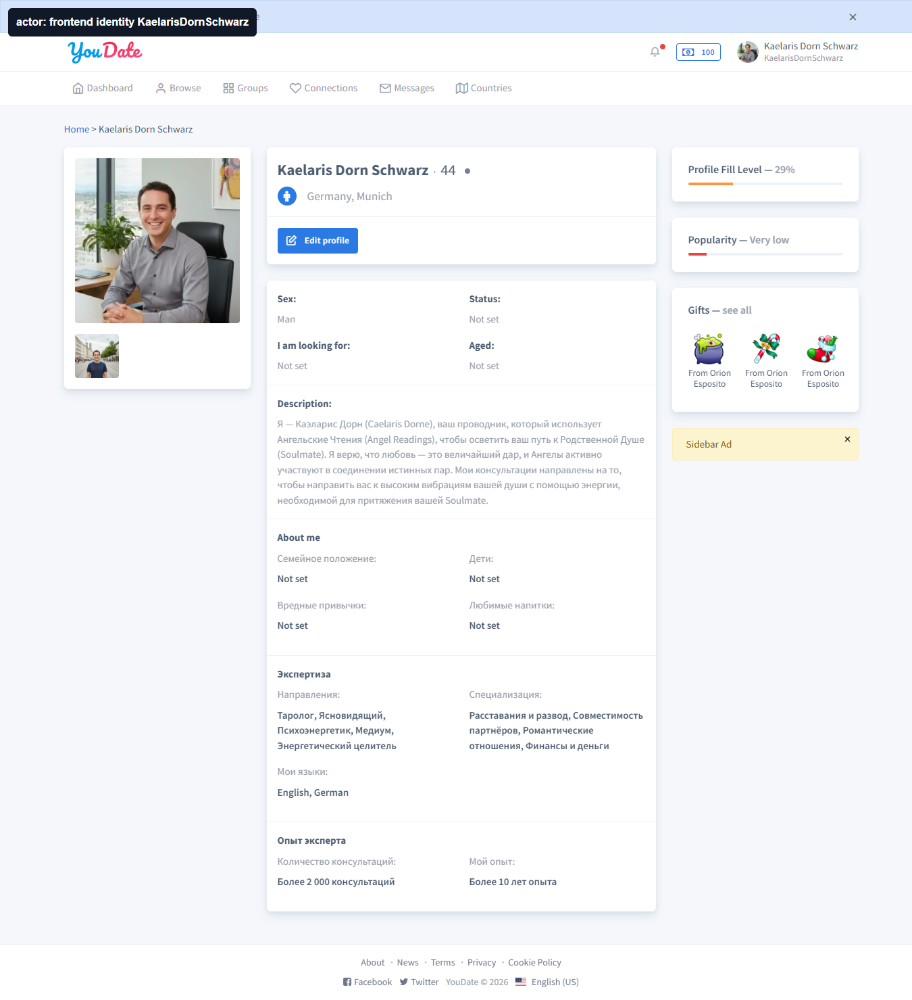
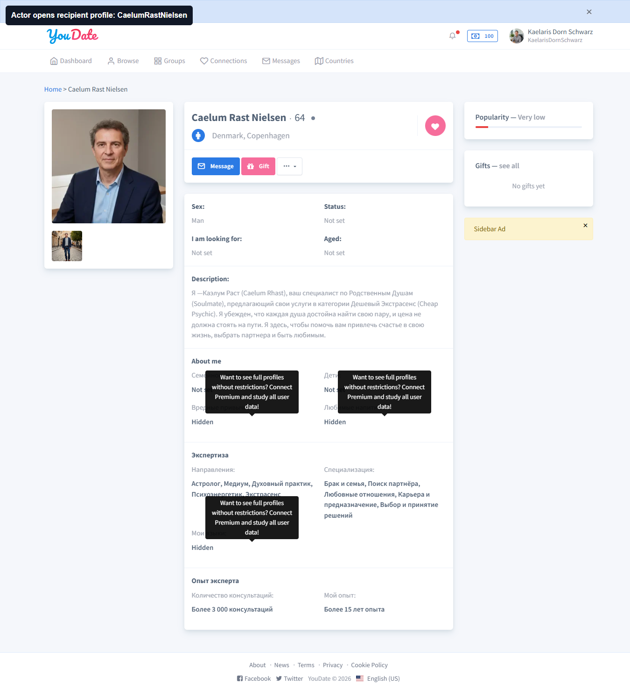
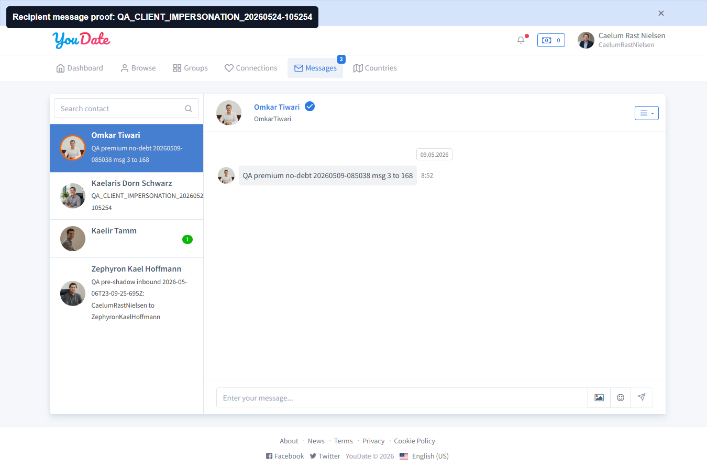
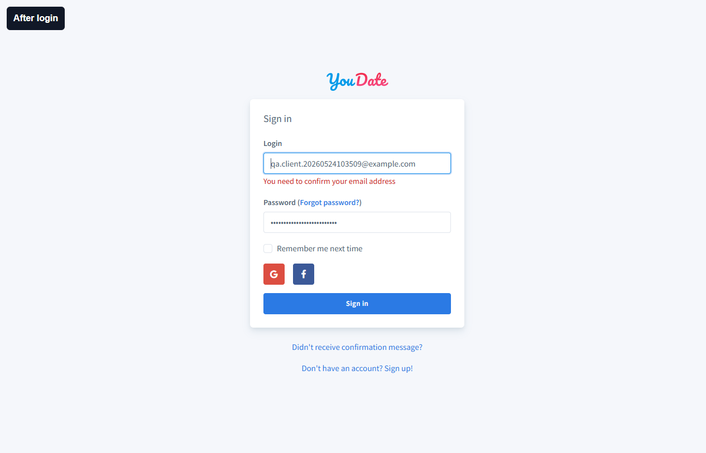

Короткий вывод
Релиз нельзя считать чистым после перехода на PHP 8.5. На live воспроизведены 7 дефектов: новости падают с #8192, профиль из каталога падает с #2, фильтр Cities по имени падает с #8192, Plugins падают с #8192, admin menu содержит битые {url} ссылки, сортировка/пагинация admin Messages падает с #8192, Queue Monitor показывает Supervisor PermissionError.
Что работает: правильный вход в админку через пользовательскую admin-сессию подтвержден; клиентское сообщение U166 -> U168 доставлено и видно получателю.
Покрытие проверки
| Зона | Статус | Что проверено | Вывод | Evidence |
|---|---|---|---|---|
| PHP/runtime | PASS | Live dashboard и public headers показывают PHP 8.5.0. |
Отчет относится к текущему live runtime. | admin audit JSON |
| Публичный сайт | FAIL | 180 GET-страниц, 345 форм, внутренние ссылки. | Найдены падения news/profile. POST формы вынесены в отдельные клиентские сценарии с rollback. | public audit JSON, CSV |
| Админка | FAIL | 52 admin-страницы в авторизованной сессии, 61 форма, 113 sort/page links, 54 GET-фильтра. | Найдены падения Cities, Plugins, Messages, Queue Monitor и битые menu links. | admin audit JSON, CSV |
| Targeted regression | FAIL | Повторены важные URL: Cities base/name/search/sort/page, Countries sort, Messages sort/page, Plugins. | Подтверждает дефекты CF-PHP85-03, CF-PHP85-04 и CF-PHP85-06. | targeted JSON |
| Клиентский путь | PASS | U166 -> U168 через admin Login as user: профиль, визит, сообщение, доставка получателю, messages, connections, settings, groups, browse. |
Сообщение доставлено. Открытые пункты вынесены ниже: signup confirmation, profile Message UI, like recipient proof, production stack trace. | client impersonation JSON, signup JSON, rollback JSON |
| Код и синтаксис | PASS | Доступный PHP snapshot: 368 PHP-файлов, 0 parse errors под локальным PHP CLI 8.1. | Для live #8192/#2 нужен Yii stack trace из production log. |
lint JSON, risk scan JSON |
Дефекты для программиста
| ID | Факт | Как должно быть | Как воспроизвести | Где смотреть | Retest |
|---|---|---|---|---|---|
| CF-PHP85-01 FAIL |
Публичный раздел новостей падает с #8192 во всех проверенных языках: /ru/news, /en/news, /pt/news, /de/news, /es/news, /it/news. Article URL также падает. |
Список новостей и карточка новости должны открываться или отдавать контролируемый empty state без 500. | Открыть https://confideline.com/ru/news или перейти по News-ссылке с главной/языковой страницы. |
News controller/model/view, i18n route handling, PHP 8.5 deprecations promoted to exceptions. Нужен production stack trace по #8192. |
После фикса открыть news index/article для ru/en/pt/de/es/it; все должны вернуть 200 без #8192. |
| CF-PHP85-02 FAIL |
Публичный профиль /ru/profile/OmkarTiwari и /en/profile/OmkarTiwari, найденный из directory, возвращает HTTP 500 / Ошибка (#2). |
Профиль из каталога должен открываться. Если пользователь недоступен, нужен контролируемый 404/empty state, не 500. | Открыть /ru/directory, перейти на профиль OmkarTiwari. |
Profile controller/view, user/profile relation, media/avatar/widgets, access/visibility checks. Нужен live stack trace по #2. |
Directory -> profile в ru/en без 500. |
| CF-PHP85-03 FAIL |
Admin Cities: базовая /ru/admin/geoname/index открывается, сортировка ?sort=name и ?page=2 сейчас PASS, но direct filter GeonameSearch[name]=Munich стабильно дает Ошибка (#8192). |
Поиск города по имени должен фильтровать таблицу и не падать на строковых значениях. | Войти через /ru/admin, открыть Cities, в поле name задать Munich или открыть /ru/admin/geoname/index?GeonameSearch%5Bname%5D=Munich. |
Live-класс поиска GeonameSearch или аналог в текущем деплое. В локальном source snapshot этот search class не найден, поэтому нужен production файл/stack trace. | targeted regression: base PASS, name=Munich FAIL #8192. |
| CF-PHP85-04 FAIL |
Admin Plugins: /ru/admin/plugin/index и /ru/admin/plugin/browse возвращают Ошибка (#8192). |
Раздел должен показывать installed/browse plugins или контролируемое сообщение, но не 500. | Войти через /ru/admin, левое меню -> Плагины, открыть installed и browse. |
application/modules/admin/controllers/PluginController.php, application/plugins/PluginManager.php, PluginInstaller.php, plugin views, внешний provider/download client. |
Оба URL возвращают 200 без #8192. |
| CF-PHP85-05 FAIL |
В DOM админки на 52 проверенных страницах найдено 312 occurrences placeholder-ссылки {url}, например /ru/%7Burl%7D и /ru/admin/country/%7Burl%7D. Клик ведет на 404. |
Групповые пункты меню должны быть некликабельными, иметь #, раскрывать submenu или вести на реальный route. |
В админке кликнуть родительские группы меню: Финансы, Сообщения, Содержимое, Countries & Cities, Логи, Для розробника. | Admin menu widget/template. Вероятная зона: application/modules/admin/widgets/Menu.php или шаблон, где {url} остается в parent item без url. |
В DOM не должно быть href="{url}" и encoded %7Burl%7D. |
| CF-PHP85-06 FAIL |
Admin Messages: base page в полном audit открывалась, но rendered sort/pagination links ?sort=text, ?sort=created_at, ?page=1..4 дают Ошибка (#8192). |
Сортировка и пагинация сообщений должны работать как read-only навигация. | Открыть /ru/admin/message/index, нажать сортировку Text/Created At или пагинацию. |
Message admin controller/search model/grid provider. Проверить PHP 8.5 deprecations при query/sort/pagination. | Все rendered sort/page links дают 200 и таблицу сообщений. |
| CF-PHP85-07 FAIL |
Admin Queue Monitor показывает functional error внутри страницы: Supervisor status error: PermissionError ... supervisor/xmlrpc.py line 557. |
Монитор очереди должен показывать статус supervisor/worker или контролируемое сообщение о недоступности без Python PermissionError в UI. | Открыть /ru/admin/queue-monitor/index. |
Queue monitor controller/view, supervisor XML-RPC access, permissions for supervisor socket/config. | Страница показывает статус supervisor без traceback/PermissionError. |
Клиентский путь
Регламент: для общения от лица анкет используется admin-карточка пользователя -> Login as user, затем проверяется frontend identity без admin menu. Для кросс-пользовательского действия требуется proof с обеих сторон: отправитель/автор и получатель/зритель.
Доказанный сценарий: U166 KaelarisDornSchwarz отправил сообщение U168 CaelumRastNielsen. Marker QA_CLIENT_IMPERSONATION_20260524-105254, messageId=264. Получатель увидел точный текст в /en/messages/messages?contactId=166.
| Проверка | Статус | Факт | Evidence |
|---|---|---|---|
| Signup | PASS | /en/signup принял заполнение и submit. После logout повторный login заблокирован email confirmation. | client-full-journey.md |
| Rollback signup user | PASS | Readback по email QA-пользователя вернул NO_USER_FOUND. | admin-rollback-user.json |
| Admin Login as user | PASS | U166 и U168 открыты через admin user info, frontend identity подтвержден, admin UI отсутствует. | client-impersonation-journey.md |
| Visit proof | PASS | После визита U166 получатель U168 видит U166 в guests. | recipient-guests-after.png |
| Like action | PASS | Клик like/favorite выполнен. Видимость в списке likes-to-you вынесена в recheck. | actor-after-like.png |
| Message delivery | PASS | /en/messages/create вернул success; U168 видит marker QA_CLIENT_IMPERSONATION_20260524-105254. | recipient-message-proof.png |
| Основные клиентские разделы | PASS | /en/messages, /en/connections/encounters, /en/settings/profile, /en/settings/account, /en/groups, /en/browse открываются в клиентской сессии. | route-client-messages.png |
{kind=link}
{kind=link}
{kind=link}
{kind=link}
Открытые пункты
| Пункт | Статус | Факт | Что решить или ретестить |
|---|---|---|---|
| Signup email confirmation | PRODUCT DECISION | Новый клиент регистрируется, но после logout не входит без email confirmation. | Подтвердить ожидаемое правило. Для QA нужен mailbox/admin-confirm fixture, иначе new-user E2E всегда останавливается на confirmation gate. |
| Profile Message UI | RETEST | Доставка сообщения доказана через frontend endpoint, но visible profile-level Message modal/button не подтвержден. | Ретест: U166 -> профиль U168 -> видимая кнопка Message -> отправка -> U168 видит exact marker. |
| Like recipient proof | RETEST | Like action выполнен, но U168 likes-to-you не показал U166. | Ретест на чистой паре пользователей без mutual/old-like состояния. |
| Production stack trace | NEEDED | UI показывает только номера #8192 и #2. | Игорю нужен Yii/prod log по URL из карточек CF-PHP85-01..07. |
Скриншоты evidence

GeonameSearch[name]=Munich -> Ошибка (#8192).
Ошибка (#8192).
Ошибка (#8192).
{kind=link}

Login as user: U166 открыт как обычный клиент, admin menu отсутствует.{kind=link}

/en/profile/CaelumRastNielsen.
QA_CLIENT_IMPERSONATION_20260524-105254.{kind=link}

Синтаксис и код
Доступный source snapshot прошел php -l: 368 PHP-файлов, 0 parse errors. Это снимает грубый синтаксический слом в проверенном snapshot, но не заменяет production stack trace по live-ошибкам.
Статический risk point: controllers/BalanceController.php содержит suppressed @file_get_contents. Это не связанная с текущими #8192/#2 доказанная причина, а кодовая зона для отдельной cleanup-задачи.
Raw evidence
| Файл | Что внутри |
|---|---|
| live-public-http-audit.json | 180 public GET pages, forms, links, 20 FAIL. |
| live-public-page-summary.csv | Краткая таблица public pages. |
| live-admin-cdp-audit.json | Admin pages/forms/buttons/links/filters, risk classification. |
| live-admin-page-summary.csv | Краткая таблица admin pages. |
| live-admin-targeted-regression.json | Targeted regression для Cities/Countries/Messages/Plugins. |
| source-php-lint-focused-20260524.json | Focused PHP lint: 368 files, 0 parse errors. |
| source-php85-risk-scan-focused-20260524.json | Focused static risk scan. |
| client-full-journey.json | Signup path, profile/settings attempt, logout/login confirmation blocker, discovery/profile smoke. |
| admin-rollback-user.json | Rollback/readback по signup QA user: NO_USER_FOUND. |
| client-impersonation-journey.json | Logged-in client path через admin Login as user, U166 -> U168, message marker proof. |
Следующий шаг
Игорю: взять CF-PHP85-01..07, снять Yii stack trace по каждому URL, исправить first exception и ретестить по колонке Retest.
QA: для новых mutating admin checks использовать fixture-lane: baseline -> action -> after-state -> rollback/readback. Для общения между анкетами использовать регламент admin user info -> Login as user -> frontend action -> proof у второй анкеты.